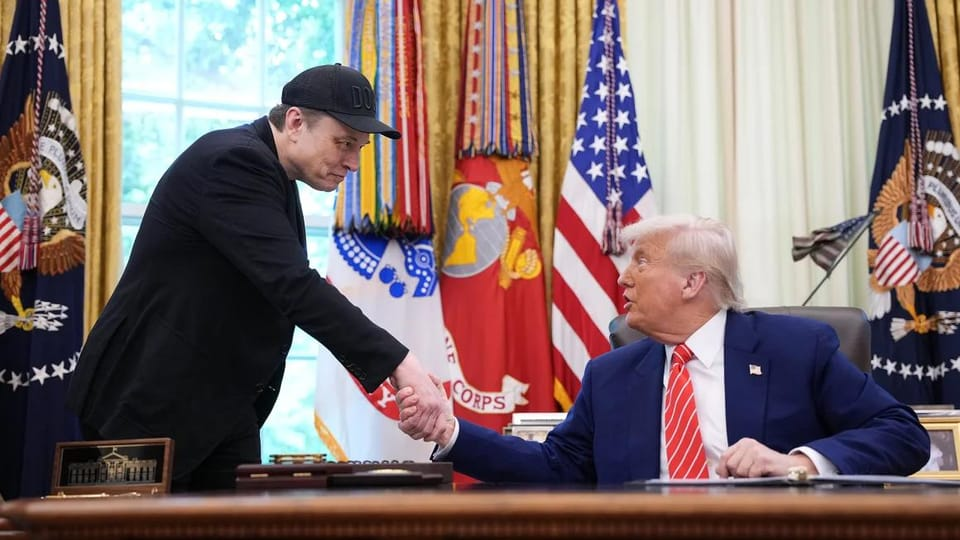

世界苦茶05月31日新闻 | 43条 | 特朗普称中国贸易违约局势加剧

特朗普称中国贸易违约局势加剧 | 特朗普决定对台加强军售 | 韩大选前李在明之子酿争议 | 汽车工业协会发问批评比亚迪 | 特朗普将进口钢铝关税上调至50% | 美国最高院允许特朗普撤销中美洲移民的临时合法身份
每天三件事：
苦茶数据
美元兑人民币：7.20（昨日7.19，前日7.19）
美元兑日元：144.28（昨日143.99，前日145.82）
上证指数：休市（昨日3347，前日3355）
标普500指数：休市（昨日5911，前日5912）
比特币：103740（昨日105585，前日108077）
布伦特原油：63.90（昨日63.91，前日65.68）
中国新闻
• 港府拟扩招国际生 ：美国特朗普政府宣布禁止哈佛大学招收国际学生政策后，香港特首李家超说，港府正考虑增加本地八所大学的非本地生学额，以吸纳受美国政策影响的学生。综合香港01和《星岛日报》报道，李家超星期四赴立法会出席特首互动交流答问会，与议员讨论深化国际交往合作和加快发展北部都会区等议题。选委界立法会议员刘智鹏在会上说，哈佛大学因美国政策被迫中止招收外籍学生，令部分学生需转校继续学业，也促使部分非美籍教授和科研人员离开美国。
• 特朗普称中国违约 ：美国总统特朗普星期五说，中国“完全违反”与美国达成的关税协议。路透社报道，特朗普星期五在他的社交平台Truth Social上发文说：“中国——或许对某些人来说并不意外——已经完全违反与我们的协议。当‘好好先生’有什么用！”一天前，美财长贝森特接受福克斯新闻访问时说，美中之间的贸易谈判目前“略显停滞”，要想达成最终协议，或仍需特朗普总统与中国国家主席习近平直接介入。
• 中方强烈反对对台军售 ：针对媒体报道美国总统特朗普计划在第二任期内大幅增加对台军售，中国外交部表示坚决反对，敦促美国停止售台武器和制造台海局势紧张因素。路透社星期五引述匿名美国官员报道称，预计未来四年内，美国批准对台军售的规模将“轻松超过”特朗普第一任期180亿美元的销售总额，以强化对中国大陆的威慑力。中国外交部发言人林剑当天在例行记者会上回应称，台湾问题是中国核心利益中的核心，是中美关系第一条不可逾越的红线。
• 王毅签署调解院公约 ：中国大陆发起的国际调解院公约签署仪式在香港举行，中共中央政治局委员、中国外交部长王毅出席签署仪式，代表中国成为首个签署公约的国家。综合央视新闻、香港电台和《星岛日报》报道，国际调解院公约签署仪式星期五上午10时在香港湾仔君悦酒店举行。王毅在香港行政长官李家超的陪同下进入会场，出席签署仪式。大会先播放有关成立国际调解院及未来工作的宣传片，王毅之后上台签署《关于建 立国际调解院的公约》，代表中国成为首名签署公约的国家，其他签署国代表也逐一上台签署。（翻評：一個不尊重國際海事法庭裁決，在WTO違反大部分承諾，和周圍國家都有持續爭端的國家，牽頭搞國際調解，真是滑天下之大稽。）
• 孙笑川吧暂停更新15天 ：中国知名的亚文化迷因社区百度“孙笑川吧”，以平台管理需求升级为由，星期四起至6月12日暂时停更15天，只能浏览不能发贴。据《扬子晚报》报道，百度贴吧的“孙笑川吧”星期四置顶暂时停更公告。公告称：“因平台管理需求升级，孙笑川吧于5月29日到6月12日暂时停更15天，届时孙笑川吧将只能浏览，不能发贴。”报道称，孙笑川吧同时置顶了百度贴吧站方4月发布的《持续强化网络乱象治理，守护清朗网络空间》一文。
• 赵世通任国台办副主任 ：担任中共中央对外联络部部长助理近两年的赵世通，获任命为中国大陆国台办副主任。据中国大陆人社部官网消息，中国大陆国务院星期四（5月29日）发布最新的国家工作人员任免名单。赵世通获任命为国务院台湾事务办公室副主任，仇开明被免去国台办副主任职务。根据国台办官网机构设置信息，国台办主任为宋涛，三名副主任依序是潘贤掌、吴玺和赵世通，形成“一正三副”格局。
• 外交部批美限制发动机技术 ：针对美国暂停向中国出售发动机技术，中国外交部称，美国将经贸科技问题政治化和工具化，对中国进行恶意封锁和打压，中方对此坚决反对。在星期五举行的中国外交部例行记者会上，路透社记者提问道，就美国暂停向中国商飞出售发动机技术一事，中国驻美大使馆发言人称中方坚决反对美方夸大国家安全概念，滥用出口管制。但是中方自己的出口管制不就是这样吗？中美出口管制有何区别？中国外交部发言人林剑回应称，中国出台的出口管制措施，符合国际通行的做法，是非歧视性不针对特定国家。“我们愿与有关国家和地区加强出口管制领域对话合作，致力于维护全球产供链稳定。”
• 台拟扩大公职赴陆限制 ：台湾陆委会正研拟修法，计划扩大对前往中国大陆、香港和澳门的公职人员的规管范围，且将涵盖基层公职人员。综合《联合报》《中国时报》报道，台湾立法院内政委员会星期四审议《两岸人民关系条例》与《港澳条例》修正草案，陆委会主委邱垂正列席时说，将扩大规范公职人员赴陆港澳的适用对象。至于基层公职人员涵盖哪些人员，邱垂正没有明确回应，仅称正研议修法方向，未来将对公务员及特定身份人员的赴陆管理作出具体调整，完成内部研议后将依程序对外预告说明。
• 福岛水产品交流有进展 ：中国外交部公布，中国对福岛核废水的独立取样结果没发现异常，双方围绕日本水产品安全问题的交流取得实质进展。中国外交部发言人林剑星期五在例行记者会上说，今年以来，在持续开展对福岛核废水排海国际监测、中国独立取样检测结果没有异常的基础上，中国同日本就日本水产品安全问题进行接触商谈。他说，中国海关总署星期三应约在北京同日本就日本水产品安全问题进行新一轮技术交流，取得实质进展。日本承诺采取可信、可视措施，保障日本水产品的质量安全，确保满足中国监管要求和食品安全标准。
• 中国或6月恢复接收波音 ：美国波音公司首席执行官凯利·奥特伯格说，中国预计将于6月恢复接收波音客机。据路透社报道，奥特伯格星期四在伯恩斯坦战略决策会议披露上述信息。他说，为反制美国总统特朗普制定的对等关税，中国在4月停止接收波音客机。
• 美警告中国滥用学术资源 ：美国国务院说，美国绝不容忍中国共产党“滥用”美国大学资源或窃取美国的研究成果和知识产权。路透社报道，美国国务院发言人布鲁斯在星期四的例行简报会上拒绝说明将受撤销签证新计划影响的中国学生数量，仅表示国务院将对任何“被视为对美国构成威胁或问题”的人进行仔细审查。但她也拒绝说明如何确定对美国构成威胁的人。
• 网信办开展人脸备案工作 ：中国国家网信办今晚发布关于开展人脸识别技术应用备案工作的公告，根据《人脸识别技术应用安全管理办法》第十五条规定，应用人脸识别技术处理的人脸信息存储数量达到10万人的个人信息处理者，应当向所在地省级网信部门履行备案手续。自2025年6月1日起，应用人脸识别技术处理的人脸信息存储数量达到10万人的，应当自数量达到之日起30个工作日内履行备案手续。之前已经达到10万人的，应当在今年 7月14日前履行备案手续。备案信息发生实质性变更的，应当在变更之日起30个工作日内办理备案变更手续。未按照办法规定履行备案手续的，依照有关法律、行政法规的规定处理。
亚太印太新闻
• 朝鲜修法禁韩流用语 ：朝鲜政府日前修订《刑法》，大幅加重对“反社会主义文化”的惩罚力度，首次将部分涉外文化传播行为纳入死刑适用范围，禁止朝鲜人使用韩国流行语如“欧巴”等词语。综合《韩国先驱报》和亚洲新闻网路报道，朝鲜司法部星期五发布相关说明，称此举旨在遏制外来意识形态渗透，特别是来自韩国的“韩流”影响。此次修法将适用死刑的罪名从原有的11项增至16项，涵盖毒品犯罪、反动思想与文化传播等特殊刑事案件。其中，“韩流文化”被明确视为威胁政权稳定的因素之一，包括模仿韩国流行语如“欧巴”等用法。 （翻評：適用死刑......）
• 朝鲜开会部署国防改革 ：朝鲜劳动党5月28日开军委扩大会，讨论进一步加强军内各级政治机关的职能和作用；新任命了6名军级单位指挥员、炮兵局长和保卫局长，还新委派了一些政委；布置了重要项目建设；分析有关国家安全的局势，还批示和布置了国防科工领域的一系列新计划工作。
• 韩国批准三份卫星协议 ：韩国批准关于外国低轨卫星通信运营商在韩提供相关服务的三份协议。韩联社报道，韩国科学技术信息通信部星期五说，美国太空探索技术公司与子公司星链韩国近日签署《关于跨境提供通信服务的协议》；全球低轨卫星通信公司“一网”则分别与韩国军工企业韩华系统、卫星服务商KT SAT签署相同协议。这三份协议均获韩国科技部批准。
• 台男子拍韓情报院被捕 ：韩国警方通报，一名台湾男子涉嫌拍摄韩国情报院被拘留。据韩联社报道， 韩国警方星期四以涉嫌违反《军事基地及军事设施保护法》为由，拘留一名在韩国国家情报院办公楼前拍摄的30多岁台湾男子。韩国警方通报，上述男子当天下午12时33分许在首尔市瑞草区内谷洞国情院正门附近，用手机拍摄院区内部。瑞草警察署接到报案后赶赴现场当场拘留该男子，将他移交首尔警察厅产业技术安保搜查队。
• 韩候选人之子争议发酵 ：韩国共同民主党候选人李在明之子的歧视性网络留言引发一系列争议。在总统大选最后一场电视辩论中，改革新党候选人李俊锡为攻击李在明，在直播中完整转述了其子涉及女性性器官的争议言论，并向其他候选人提问如何看待。此举立即引发广泛批评，认为他在公开场合不当地传播了性暴力言论。面对舆论压力，李俊锡最初辩解称已“最大限度地提炼”。然而，李俊锡于30日上午向党员发送邮件，就其在辩论中不恰当的措辞和言语尺度向所有受到伤害的人深表歉意，并表示所有责任在我。同一天下午，李在明就其子引发的争议向记者表示，“对于过分的表达，子不教父之过，是我没有教育好”。但他话锋一转，将矛头指向李俊锡，指责他夸大、歪曲留言内容，捏造成带有性意味的表达。与此同时，被指是李在明之子留言中遭到性骚扰的Asepa队长Karina也卷入风波。她在Instagram上发布了一张穿着带有红色和数字2夹克的照片，网友认为这可能是在支持使用红色主题和二号票号的保守派国民力量党候选人金文洙。Karina随后通过Bubble道歉，强调自己“绝对没有任何政治意图”。其所属公司SM娱乐也发表声明，称该照片只是日常内容，因担心被误解而立即删除。据韩国中央选委会30日消息，为期两天的第21届总统选举缺席投票结束，最终投票率为34.74%，创史上第二高。
• 赖清德盼建“非红链” ：台湾总统赖清德指新极权集团主导的供应链试图掌控全球关键科技与制造能力，并说希望台湾和欧洲推动签署台欧盟经济伙伴协定，共同打造非红供应链。据台湾总统府官网文告，赖清德星期四晚出息“2025欧洲日晚宴”，并以英文致辞。赖清德表示，欧洲是台湾的第三大贸易伙伴，也是台湾最大外国投资来源。台欧贸易总额去年达到847亿美元，展现台欧经贸往来的热络，更反应双方企业对彼此市场与体制的高度信赖。
• 特朗普拟大幅军售台湾 ：美国总统特朗普计划在第二任期内大幅增加对台军售，目标是超过其首任期内180亿美元的销售总额，以强化对中国大陆的威慑力。据路透社星期五报道，匿名美国官员透露，预计未来四年内，美国批准对台军售的规模将“轻松超过”特朗普第一任期。根据路透社计算，特朗普第一任期批准对台军售约183亿美元，拜登任期内约为84亿美元。但《外交家》杂志3月指出，台湾仍在等待价值近22亿美元的美制武器交付，其中部分订单已延宕多年。
• 新法全面战略升级 ：新加坡和法国升级为全面战略伙伴，两国将深化在去碳化、数码化和人工智能等新兴领域的合作。我国总理黄循财与正在新加坡展开国事访问的法国总统马克龙，星期五在联合记者会上宣布这个消息。黄总理在开场发言时说，法国是第一个与新加坡建立战略伙伴关系的欧洲国家，为两国在防务、贸易、网络安全和教育等多方面的紧密合作，奠定基础。 （翻評：中國在搞這個“戰略伙伴”的通貨膨脹，中國2024年一口氣把30個國家變成”戰略伙伴“，但歐盟 僅在十餘國使用「戰略伙伴」；印度 約 30 國；巴西、土耳其 皆低於 10 國。）
科技新闻
• 小米将投2000亿研发AI ：中国科技企业小米总裁卢伟冰表明，人工智能与晶片是小米未来发展的关键战略方向。综合《中国经营报》《每日经济新闻》报道，卢伟冰在接受采访时透露，小米计划在2026年至2030年期间投入2000亿元人民币用于研发，致力于将AI和晶片打造成企业的“护城河”。小米5月20日发布了首款自主研发设计的三纳米旗舰手机SoC晶片“玄戒O1”，该晶片采用第二代三纳米制程工艺，成为全球第四家可自行设计三纳米手机晶片的科技企业。
• Synopsys停止中国服务 ：在美国限制企业向中国出口晶片设计软件后，美国半导体设计软件公司新思科技已中止在中国的服务与销售，并暂停接收来自中国客户的新订单。美国商务部上星期五已通知美国三家半导体设计软件供应商新思科技、楷登和西门子，要求这些公司停止向中国提供技术。据路透社报道，新思科技星期五在致中国员工的内部信中说：“根据我们目前的初步解读，这些新规定将广泛禁止我们在中国销售产品和提供服务，并自2025年5月29日起生效。” （翻評：中美突然就是深度冷戰節奏了。）
财经新闻
• 中国汽车工业协会5月30日发《关于维护公平竞争秩序、促进行业健康发展的倡议》指： 5月23日以来，比亚迪率先发起大幅降价活动，多家车企跟进效仿，引发新一轮“价格战”恐慌。这将阻碍行业自身健康发展、危害消费者权益、带来安全隐患。要求所有企业自查整改。工信部将加力整治“内卷式”竞争，推动产业结构优化调整，加强产品一致性抽查，配合开展反不正当竞争执法。
• 台美盼达成优惠贸易协定 ：台湾外交部官员说，台美贸易谈判沟通顺畅，对于能在美国90天暂停期结束前完成“好、完整又漂亮”的协议充满信心；台湾期望能争取比其他国家更优惠的税率，“如果别人是10%，我们希望是低于10%”。台湾外交部星期五在官网发文告称，外交部政务次长陈明祺星期四接受彭博社专访，针对台美贸易谈判进程、美国关税政策、新台币汇率及能源合作等外界关注议题，说明台湾政策立场与未来展望。
• 美国总统特朗普5月30日宣布，计划将美国进口钢铝关税从目前的25%上调至50%，以保护美国钢铁产业： 关税将于6月4日起生效。特朗普发表相关言论时，正谈论日本制铁公司与美国钢铁公司之间的协议。他说这项价值149亿美元的协议将保护美国钢铁工人的就业机会。
• 比亚迪否认是车圈恒大 ：被指是“汽车圈恒大”的中国电动车巨头比亚迪称，中国主流车企不存在所谓“车圈恒大”，对于危言耸听的言论，已向中国国家有关部门反映上报，将追究法律责任。据澎湃新闻报道，中国汽车制造商长城汽车董事长魏建军在上周播出的一档采访节目中，作出“汽车行业的‘恒大’已经出现，只不过没爆”的论断，让中国汽车行业负债受到外界关注。比亚迪集团品牌及公关处总经理李云飞星期五在微博发文称，最近有大量的文章、评论和视频暗指比亚迪是“汽车圈恒大”。“说实话，我很困惑，感觉又好气又好笑。”
• 前高盛银行家获刑两年 ：在一个马来西亚发展有限公司贪腐案中扮演关键角色的前高盛银行家莱斯纳，被美国纽约法院判处两年监禁。路透社报道，马来西亚和美国当局估计这个马来西亚主权基金的被盗金额高达45亿美元，这是一个覆盖全球、精心策划的阴谋，涉及人员包括一马公司高层、马来西亚前首相纳吉和高盛高管等。55岁的莱斯纳曾任高盛东南亚地区主管，他在2018年承认违反美国《反海外腐败法》并参与洗钱阴谋，这些罪名都与他在一马公司丑闻中所扮演的角色有关。
• 中国人在韩房产超五万套 ：韩国官方数据显示，外国人在韩持有房产数量首次突破10万套，其中中国人的持有量达56%。据韩联社报道， 韩国国土交通部星期五公布的统计数据披露上述信息。截至去年12月，外国人在韩持有房产共10万零216套，较半年前增加5.4%，占全体房产数量的0.52%。按产权人国籍看，中国人在韩国持有最多房产，达5万6301套，较半年前增加3503套，占外国人所持房产的56.2%。美国人在韩持有2万2031套房产，占比为22%，排在中国人之后。
• 国内航班下调燃油费 ：中国多家航空公司宣布，自6月5日起下调国内航线燃油附加费，800公里及以下航线将免征。综合第一财经和澎湃新闻报道，飞猪、去哪儿等旅游平台星期四透露，已接获吉祥航空等多家航空公司通知，自6月5日起，中国境内航线的燃油附加费将下调：800公里以内航线将免收附加费，800公里以上航线则每名旅客每程收取10元人民币。相比此前标准，各航线附加费均减少10元，降至近一年来最低水平。
• 特朗普筹备“关税B计划” ：有消息指，在美国联邦巡回上诉法院暂时恢复特朗普政府的关税措施之际，特朗普团队正在准备“关税B计划”，评估是否有需要利用新的法律授权来实施特朗普的关税政策。《华尔街日报》星期四引述消息人士称，特朗普团队目前考虑两方面的应对措施，第一步是考虑根据《1974年贸易法》的一项从未使用过的《122条款》，对全球大范围征收关税。这项条款包括允许政府在150天内征收高达15%的关税，以解决美国与其他国家的贸易不平衡问题。第二步是根据《301条款》来加征关税，虽然当中牵涉漫长的通知及讨论过程，但被认为更具法律依据。
• 特朗普怒批中国违约施压 ：特朗普5月30日晨发帖：中国已完全违背了其与美方的协商共识，美方唱红脸的时间结束了。白宫官员29日表示，中国未如美方预期那样解除稀土出口管制，在特朗普政府内部引起了巨大的不悦。美方遂宣布吊销中国留学生签证、管制芯片设计软件和飞机发动机出口等综合施压措施。美国还放风对台军售计划：总额拟超过特朗普第一任期的183亿美元，希望台湾将国防支出调增至GDP的3%以上，要求国民党不得反对。美财长贝森特29日受访说，中美经贸谈判有些停滞，相信未来数周会作更多沟通；鉴于谈判的尺度和复杂性，可能需要习近平和特朗普亲自通话。28日，特朗普被记者问到“川普总会认怂，因此每当加关税投资者即可逢低买入”的说法，他表现出十足的愤怒，称这个问题非常肮脏。
俄乌战争
• 乌克兰港口重建需5亿欧元 ：乌克兰政府说，为重建在俄军导弹与无人机持续袭击中受损的黑海关键港口设施，乌方初步估计需至少5亿欧元资金。路透社报道，乌克兰领土发展部副部长卡舒巴星期五在敖德萨出席黑海安全论坛时指出：“我们已识别出目前为止在港口与航运方面所失去的主要关键基础设施，现在必须展开修复工作。”自俄罗斯2022年全面入侵以来，已有近400处港口基础设施遭到破坏。乌克兰有超九成出口依赖海运，港口在国家经济中具有关键战略地位。
• 朝鲜向俄罗斯提供了900万发炮弹和100枚弹道导弹： 仅在2024年，朝鲜就向俄罗斯转移了至少100枚弹道导弹，这些导弹随后被用于打击乌克兰领土，目标是摧毁民用基础设施并恐吓平民，包括基辅和扎波罗热等城市。此外，朝鲜还向俄罗斯提供了：由朝鲜生产的170毫米口径自行火炮系统，用于远程打击；240毫米多管火箭发射系统；超过200台装备，包括自行火炮、多管火箭系统单位以及为两类武器重新装填的车辆。朝鲜还向俄罗斯提供了反坦克导弹。
• 乌克兰总参谋部：乌军击退超170次俄军攻击，波克罗夫斯克前线战斗最为激烈： 在过去24小时内，乌克兰军方在10条前线以及俄罗斯库尔斯克州的作战区域共发生了173次战斗交火。其中，战斗最为激烈的是波克罗夫斯克前线，乌克兰守军在那里击退了66次俄军进攻。
其他新闻
• 德国或停供以色列武器 ：德国外交部长瓦德富尔说，德国是否批准新的对以武器交付，将依据对加沙人道局势的评估结果作出决定。路透社报道，瓦德富尔在接受《南德意志报》采访时指出，加沙当前的局势是否符合国际法仍有待商榷。他说：“我们正在对这一情况进行审查，并将在必要时依据评估结果决定是否授权进一步的武器供应。”
• 全球40亿人遭高温冲击 ：一项新研究指出，全球有超过40亿人在过去一年里，经历至少30天以上的极端高温天气，而热带地区遭受的冲击最为严重。彭博社报道，研究分析了全球247个国家与地区，结果显示，新增极端高温天数最多者几乎全部分布在靠近赤道的地区。研究员指出，这与热带地区气温波动幅度较小有关，使气候变迁所带来的趋势更明显、热浪发生更频繁。伦敦帝国理工学院研究员、世界天气归因组织成员巴恩斯说：“相比中纬度地区，热带气温变化幅度较小，因此气候变迁趋势在这些地区表现得更加清晰，极端高温也更频繁。”
• 法国公共场所将禁烟 ：法国卫生与家庭事务部长沃特兰宣布，自7月起，全国范围内将禁止在海滩、公园、学校周边及其他公共区域吸烟，以更好地保护儿童免受二手烟危害。路透社报道，沃特兰星期四（5月29日）晚间接受《西法国报》访问时透露，这项新规不适用于咖啡馆露天座位区，也不包括电子烟。她说：“有儿童在的地方，烟草必须消失。从7月1日起，法国的海滩、公园与花园、校园周边、公交站以及体育设施将全面禁烟，以保护我们的孩子。”
• 哈佛赢得国际生官司 ：美国哈佛大学在法庭上取得又一个胜利，特朗普政府禁止哈佛招收国际生的命令将在更长时间内无法实施。路透社报道，美国马萨诸塞州联邦地区法院法官星期四上午裁定延长一项临时限制令，阻止特朗普立即撤销哈佛大学的“学生和交流访问学者信息系统”认证。波士顿的美国地区法官伯勒斯宣布，她将批准哈佛大学提出的发布初步禁令请求，阻止特朗普政府取消哈佛大学招收外国学生的措施。她于上星期五首次批准哈佛大学的临时限制令请求，禁止特朗普政府执行撤销哈佛大学的SEVP认证。
• 欧盟将推年龄验证应用 ：欧盟将于今年七月推出一款新的年龄验证应用，以打造一个将更严格执行要求在线平台保护上网未成年人规则的工具。作为欧盟将于2026年推出的数字身份钱包的前身，该应用将让用户可以在不向平台披露个人信息的情况下验证自己的年龄。欧盟没有对在线平台施加统一的年龄验证要求，但它对为未成年人提供服务或处理色情或有害内容的网站规定了法律义务。推出年龄验证应用可以让欧盟对其认为自身在评估和管理风险方面做得不够的平台采取更严厉的执法措施。欧盟周二还宣布正在调查四个成人网站，原因是担心在线年龄验证措施无法保护未成年人。
• MIT关闭DEI办公室 ：美国麻省理工学院在进行了十八个月的内部评估后，于上周关闭其多元、平等和包容办公室。该校证实已关闭其学院社区与公平办公室，该办公室在官网上将其使命描述为守护麻省理工学院的价值观及其相互联系。学院发言人称，该校还将取消领导该部门的公平与包容副校长一职。麻省理工学院校长萨莉·科恩布鲁斯在对ICEO的工作进行了十八个月的 “全面评估” 后，于上周四宣布了这一消息。
• OPEC+酝酿原油增产 ：多名消息人士透露，油盟+可能在星期六举行的视频会议上讨论7月的原油增产计划，增幅或超过此前5月和6月所设的每日41.1万桶。路透社报道，油盟+中已有八个成员国提前加快增产，尽管这压低了油价。据了解，沙特阿拉伯与俄罗斯此举的目的是为了惩戒持续超产的成员，并争夺市场份额。消息人士称，油盟+内部目前考虑继续以每日41.1万桶为基准增产，但也有成员支持更大幅度的增量。
• 美大使称不减协防承诺 ：就美国裁减驻韩美军规模的可能性，美国前驻韩国大使哈里斯说，无论以任何形式重新部署驻韩美军兵力，也不会削弱美国基于《韩美相互防卫条约》对韩国作出的防御承诺。韩联社报道，为出席济州论坛访问韩国的哈里斯，星期五（5月30日）举行记者会并做出如上表述。他强调，缩减驻韩美军的任何可能性都不会给美方履行对韩协防义务产生负面影响。美国在印太地区面临涉及两岸、朝鲜、俄罗斯等诸多问题，这些问题需从大局出发予以应对，而不应分开对待。
• 美国最高法院5月30日允许特朗普政府撤销在美居住的约53.2万委内瑞拉、古巴、海地和尼加拉瓜4国移民的临时合法身份： 这可能会使这些人面临被快速驱逐的风险。最高法院的2名自由派法官公开表示反对，认为法院低估了该裁决的影响。最高法院5月19日已允许特朗普政府撤销约35万名委内瑞拉移民的临时合法身份。拜登政府自2022年起允许这些移民在经过安全检查且有经济担保人的情况下申请2年的临时合法身份，避免他们受到驱逐。特朗普上任首日就签署行政令呼吁结束该计划。